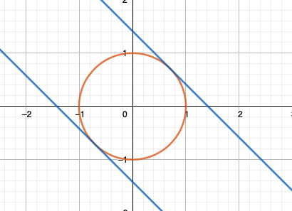

Chapter 14 从拉格朗日乘子法到KKT条件 {Lagrange multiplier to KKT condition}
关于 拉格朗日乘子法 最容易的理解是从 水平集/等高线（level set/contour）开始。
经常会看到它的各种各样写法，比如：
\[ \text{min/max }f(x,y) \\ \text{subject to } g(x,y) = c\\ \]
\[ \mathcal {L}(x,y,\lambda )=f(x,y) - \lambda \cdot ( g(x,y) - c )\\ \mathcal {L}(x,y,\lambda )=f(x,y) + \lambda \cdot ( g(x,y) - c )\\ \]
或者：
\[ \text{min/max } f(x,y) \\ \text{subject to } g(x,y) = 0 \\ \]
\[ \mathcal {L}(x,y,\lambda )=f(x,y) - \lambda \cdot g(x,y) \\ \mathcal {L}(x,y,\lambda )=f(x,y) + \lambda \cdot g(x,y)\\ \]
在 \(g(\mathbf{x}) = \mathbf{0}\) 约束下本质都一样。
14.1 介绍
- 例子一
\[ f(x,y) = x + y \\ \text{s.t. } x^2 + y^2 = 1 \\ \]
比如以上给定的 f(x,y) 和 约束g(x,y), 极值的可能出现点是在 f(x,y) 和 g(x,y) 等高线相切的地方，那么也就是梯度方向相同的地方:

level_set_0.png
也就是上图最右，也就是：
\[ \nabla f = \lambda \nabla g \]
而 拉格朗日乘数法 聪明的地方在于把 上述所有条件 pack在一个里面:
\[{\displaystyle {\begin{aligned}{\mathcal {L}}(x,y,\lambda )&=f(x,y) - \lambda \cdot g(x,y)\\[4pt]&=x+y - \lambda (x^{2}+y^{2}-1).\end{aligned}}}\]
求解：
\[ \frac{\partial \mathcal{L}}{\partial x} = 1 - 2 \lambda x = 0 \\ \frac{\partial \mathcal{L}}{\partial x} = 1 - 2 \lambda y = 0 \\ \frac{\partial \mathcal{L}}{\partial \lambda} = x^2 + y^2 - 1 = 0 \]
解出： \(\lambda = \pm\frac{1}{\sqrt{2}}\)

最值点：
\[ f(\frac{1}{\sqrt{2}}, \frac{1}{\sqrt{2}}) = \sqrt{2}\\ f(-\frac{1}{\sqrt{2}}, -\frac{1}{\sqrt{2}}) = -\sqrt{2}\\ \]

这个 \(\lambda\) 也是有物理意义的，比如 在 \(\lambda = \frac{1}{\sqrt{2}}\) 这里，它的物理意义是 假设 约束 有微小变化，此时 函数 f(x,y) 的变化.

- 例子二
\[ f(x,y) = x^2 y \\ \text{s.t. } x^2 + y^2 = 3 \\ \]
\[{\displaystyle {\begin{aligned}{\mathcal {L}}(x,y,\lambda )&=f(x,y) - \lambda \cdot g(x,y)\\[4pt]&=x^2y - \lambda (x^{2}+y^{2}-3).\end{aligned}}}\]
求解：
\[ \frac{\partial \mathcal{L}}{\partial x} = 2xy - 2 \lambda x = 0 \\ \frac{\partial \mathcal{L}}{\partial x} = x^2 - 2 \lambda y = 0 \\ \frac{\partial \mathcal{L}}{\partial \lambda} = x^2 + y^2 - 3 = 0 \]
解出实际上有6个关键点，最终满足条件的最大最小值如下：
- 例子三
假设我们有离散概率分布 \(\{p_{1},p_{2},\ldots ,p_{n}\}\), 想要具有最大的 信息熵:
\[ f(p_{1},p_{2},\ldots ,p_{n})=-\sum _{j=1}^{n}p_{j}\log _{2}p_{j} \\ \text{s.t. } g(p_{1},p_{2},\ldots ,p_{n})=\sum _{j=1}^{n}p_{j}=1 \]
同样构造
\[{\displaystyle {\begin{aligned}{\mathcal {L}}(x,y,\lambda )&=f(x,y) - \lambda \cdot g(x,y)\\[4pt]&= -\sum _{j=1}^{n}p_{j}\log _{2}p_{j} - \lambda (\sum _{j=1}^{n}p_{j} - 1)\end{aligned}}}\]
对每一个 \(p_k\) 求导：
\[ -\left({\frac {1}{\ln 2}}+\log _{2}p_{k}^{*}\right) - \lambda =0. \]
最终可知：
\[ p_{k}^{*}={\frac {1}{n}}. \]
均匀分布具有最大信息熵
14.2 多个约束
如果我们有多个约束，比如：
\[ f(x,y) \\ \text{s.t. } g_i(x) = 0, i = 1, \cdots , M \]
那么我们的做法也是类似的，
\[ {\displaystyle {\mathcal {L}}\left(x_{1},\ldots ,x_{n},\lambda _{1},\ldots ,\lambda _{M}\right)=f\left(x_{1},\ldots ,x_{n}\right)-\sum \limits _{k=1}^{M}{\lambda _{k}g_{k}\left(x_{1},\ldots ,x_{n}\right)}} \]
\[ {\displaystyle \nabla _{x_{1},\ldots ,x_{n},\lambda _{1},\ldots ,\lambda _{M}}{\mathcal {L}}(x_{1},\ldots ,x_{n},\lambda _{1},\ldots ,\lambda _{M})=0\iff {\begin{cases}\nabla f(\mathbf {x} )-\sum _{k=1}^{M}{\lambda _{k}\,\nabla g_{k}(\mathbf {x} )}=0\\g_{1}(\mathbf {x} )=\cdots =g_{M}(\mathbf {x} )=0\end{cases}}} \]
14.2.1 例子
给定约束： \(z^2 = x^2 + y^2 ， x - 2z = 3\)， 求满足约束的到原点的距离的极值, 约束条件如图：
距离虽然是 \(d = \sqrt{x^2 + y^2 + z^2}\), 这里我们偷个懒，就用 \(f(x,y,z) = d^2\)
\[ f(x,y, z) = x^2 + y^2 + z^2 \\ x^2 + y^2 = z^2 \\ x - 2z = 3 \\ \]
计算：
\[{\displaystyle {\begin{aligned}{\mathcal {L}}(x,y,z,\lambda, \mu )&=f(x,y,z) - \lambda \cdot g(x,y,z) - \mu \cdot h(x,y,z) \\[4pt]&= x^2 + y^2 + z^2 - \lambda (x^2 + y^2 - z^2 ) - \mu(x - 2z -3) \end{aligned}}}\]
求解：
\[ \frac{\partial \mathcal{L}}{\partial x} = 2x - 2\lambda x - \mu = 0 \\ \frac{\partial \mathcal{L}}{\partial y} = 2y - 2\lambda y = 0 \\ \frac{\partial \mathcal{L}}{\partial y} = 2z + 2 \lambda z + 2\mu= 0 \\ \frac{\partial \mathcal{L}}{\partial \lambda} = x^2 + y^2 - z^2 = 0 \\ \frac{\partial \mathcal{L}}{\partial \mu} = x - 2z -3 = 0 \]
最终按照以上条件可以解出:
\[ (-3, 0, 3) \to d_{max} = 3\sqrt{2} \\ (1, 0, -1) \to d_{min} = \sqrt{2} \]
14.3 KKT 条件
14.3.1 介绍
KKT 条件（Karush–Kuhn–Tucker conditions） 则是更近一步，我们先考虑问题：
\[ f(x,y) \\ \text{s.t } g(\mathbf{x}) \le 0 \]
这个约束我们称之为 primal feasibility , 根据这个我们来定义 可行域 feasible region：
\[ K = \{ \mathbf{x} \in \mathbb{R}^n | g(\mathbf{x}) \le 0\} \]
那么最优点 会有两种情况：
- \(g(\mathbf{x}) = 0\), 在边界，边界解(boundary solution)，此时约束是有效的(active)
- \(g(\mathbf{x}) < 0\), 在内部，内部解(interior solution)，此时约束是无效的(inactive)
写出拉格朗日乘子：
\[\mathcal {L}(\mathbf{x},\lambda )=f(\mathbf{x}) + \lambda \cdot g(\mathbf{x})\\\]
然后分情况讨论：
- 内部解，我们可以认为约束无效，所以可以认为条件是：
\[ \nabla f = \mathbf{0} \\ \lambda = 0 \]
- 边界解：
那就跟拉格朗日乘子法一样了，需要满足：
\[ g(\mathbf{x}) = 0 \\ \nabla f = -\lambda \nabla g \]
这里的正负号是有意义的，我们希望最小化f， 而 \(\nabla f\) 指向的是 f 在 \(\mathbf{x}\) 的最陡上升方向，应该指向 可行域 的内部， 不过 \(\nabla g\) 指向 K 的外部，即 \(g(\mathbf{x}) > 0\) 的区域：
所以
\[ \lambda \ge 0 \]
上面这个 \(\lambda \ge 0\) 条件称为 dual feasibility.
无论是边界解还是内部解，下面式子是一定满足的：
\[ \lambda g(\mathbf{x}) = 0 \]
这个条件 \(\lambda g(\mathbf{x}) = 0\) 称为 complementary slackness.
14.4 KKT 条件
我们可以总结上面的结论 再加上 等式约束：
Optimize
\[ f(\mathbf {x} ) \]
subject to
\[ {\displaystyle g_{i}(\mathbf {x} )\leq 0,}\\ {\displaystyle h_{i}(\mathbf {x} )=0.} \]
\({\displaystyle g_{i}\ (i=1,\ldots ,m)}\) 为不等式约束， \({\displaystyle h_{i}\ (i=1,\ldots ,\ell )}\) 为等式约束。
- Stationarity
For maximizing \({\displaystyle \nabla f(x^{*})-\sum _{i=1}^{m}\mu _{i}\nabla g_{i}(x^{*})-\sum _{j=1}^{\ell }\lambda _{j}\nabla h_{j}(x^{*})=0,}\)
For minimizing : \({\displaystyle \nabla f(x^{*})+\sum _{i=1}^{m}\mu _{i}\nabla g_{i}(x^{*})+\sum _{j=1}^{\ell }\lambda _{j}\nabla h_{j}(x^{*})=0,}\)
- Primal feasibility
$ {g_{i}(x^{})0,{}i=1,,m}\ {h_{j}(x^{})=0,{}j=1,,,!} $
- Dual feasibility
\({\displaystyle \mu _{i}\geq 0,{\text{ for }}i=1,\ldots ,m}\)
- Complementary slackness
\({\displaystyle \mu _{i}g_{i}(x^{*})=0,{\text{ for }}\;i=1,\ldots ,m.}\)
14.5 例子
\[ \text{minimize } x_1^2 + x_2^2 - 4x_1 - 4x_2 \\ \text{s.t } x_1^2 \le x_2 \\ x_1 + x_2 \le 2 \]
重写成：
\[ L(x_1, x_2, \mu_1, \mu_2) = x_1^2 + x_2^2 - 4x_1 - 4x_2 + \mu_1(x_1^2 - x_2) + \mu_2( x_1 + x_2 - 2) \\ x_1^2 - x_ 2 \le 0 \\ x_1 + x_2 - 2 \le 0 \\ \mu_1 \ge 0 \\ \mu_2 \ge 0 \]
进一步：
\[ 2x_1 + 2\mu_1x_1 + \mu_2 -4 = 0 \\ 2x_2 - \mu_1 + \mu_2 - 4 = 0 \\ \mu_1(x_1^2 - x_2) = 0\\ \mu_2(x_1+x_2-2) = 0 \\ \mu_1, \mu_2 \ge 0 \]
尝试求解：
- \(\mu_1 = 0, x_1 + x_2 -2 = 0 \to x_2 = 1, x_1 = 1,\mu_2 = 2\)
- $_2 = 0, x_1^2 = x_2 x_1 = -2, x_2 = 4, _1 = 4 $
- \(\mu_1 = \mu_2 = 0 \to x_1 = 2, x_2 = 2, x_2 = x_1^2\) 不可能
- $x_1^2 - x_2 = 0, x_1 + x_2 -2 = 0 x_1 = 1, x_1 = -2 $ 已经在以上情况中
最终最小值是在 f(1, 1) = -6
偏个题， 其实这里这个 \(f(x_1, x_2) = x_1^2 + x_2^2 - 4x_1 - 4x_2 = (x_1 -2)^ 2 + (x_2 - 2)^2 - 8\)，如果把 \(x_1, x_2\) 用 x，y 来代替画图的话如下：
如果没有限制的话最小值是在 (2,2) 处取得，在有限制的情况下， (1, 1) 更靠近 (2,2), 所以也是合理的解。